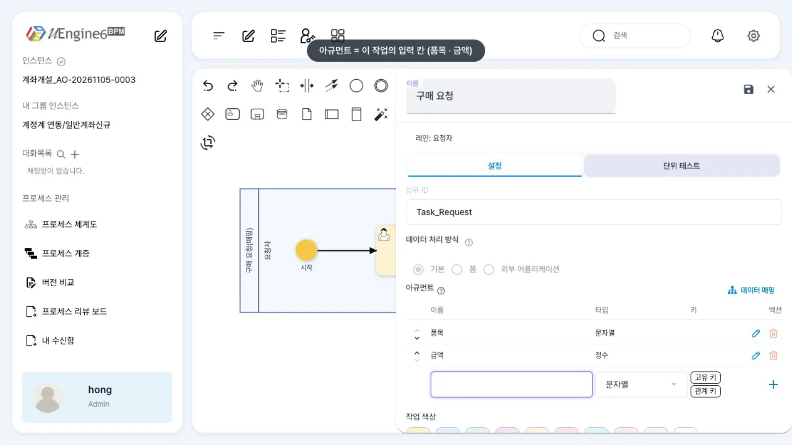
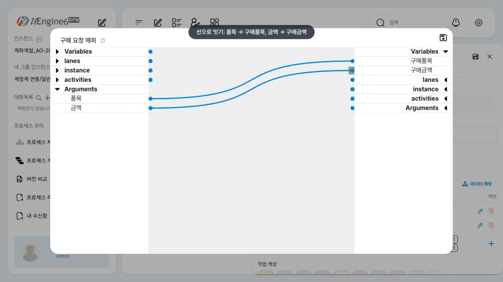
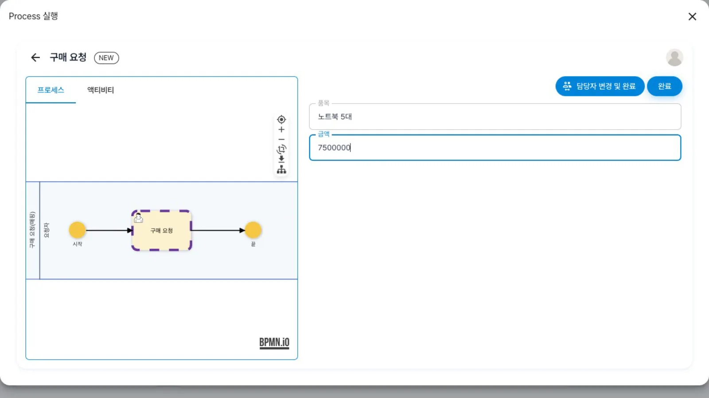
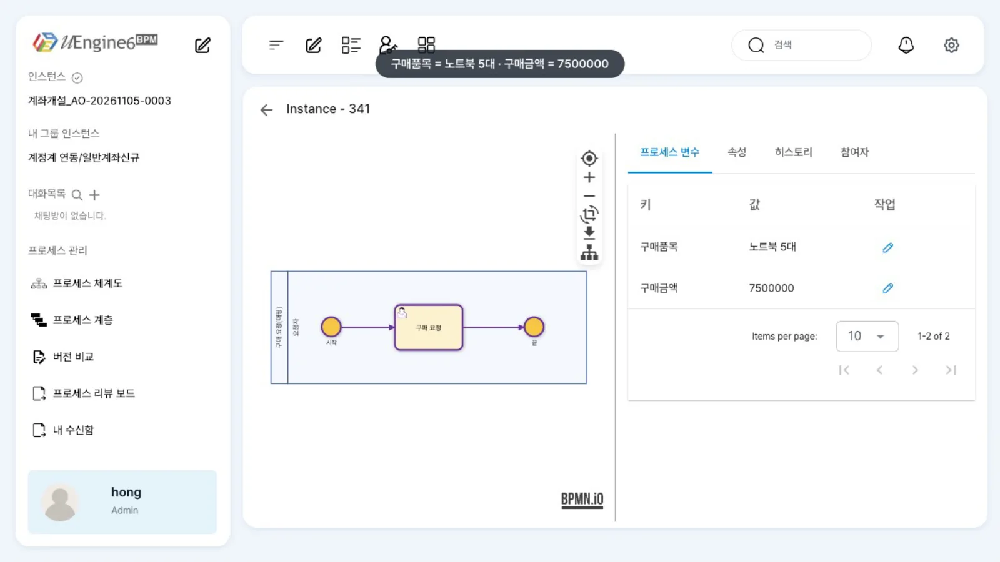

사용자 작업의 입력 칸은 아규먼트로 정하고, 데이터 매핑으로 그 값을 프로세스 변수에 옮깁니다. 「구매 요청」에 품목·금액 칸을 만들고 매퍼로 변수 구매품목·구매금액에 연결해 실행 결과를 확인합니다.
무엇을 · 왜#
작업 하나가 주고받는 값과 프로세스 전체에서 사용하는 값은 다릅니다.
| 무엇 | 사용 범위 | 수명 | 정의에서 |
|---|---|---|---|
| 아규먼트 | 작업 하나 | 그 작업이 열려 있는 동안 | eventSynchronization.attributes — 이름·타입 |
| 프로세스 변수 | 인스턴스 | 인스턴스가 끝날 때까지 | <uengine:variable name type> — 프로세스 변수와 인스턴스 이름 |
| 데이터 매핑 | 작업 | 작업이 열릴 때(in)·끝날 때(out) | eventSynchronization.mappingContext.mappingElements |
Camunda의 입력·출력 매핑(input/output mappings)과 같은 역할을 합니다. 매핑이 있으면 작업의 칸 이름과 변수 이름을 따로 지을 수 있고, 다음 작업·게이트웨이·서비스 작업은 변수만 참조하면 됩니다.
- out: 작업이 끝날 때 제출한 값
[Arguments].<아규먼트>→ 변수. 이 장에서 씁니다. - in: 작업이 열릴 때 변수 → 아규먼트(또는 폼 칸). 값을 미리 채웁니다. 폼 붙이기·업무 목록에서 일하기에서 씁니다.
이 장의 예제
프로세스 튜토리얼/매핑/구매요청 — 레인 하나, 프로세스 변수 구매품목(Text)·구매금액(Number)은 미리 있고, 작업 「구매 요청」에는 아규먼트도 매핑도 없는 상태에서 시작합니다.
변수 이름을 아규먼트(품목·금액)와 다르게 지어 매핑으로 값이 옮겨짐을 보여 줍니다.
따라 하기#
- 편집 잠금. 홍길동으로
튜토리얼/매핑/구매요청을 열고 연필 아이콘을 누릅니다. - 아규먼트 만들기. 「구매 요청」을 더블클릭합니다. 「데이터 처리 방식」은 「기본」입니다. 아래쪽 「아규먼트 이름」 칸에
품목을 적고 Enter를 누릅니다(타입은 기본값 「문자열」). 다시금액을 적고 타입을 「정수」로 바꾼 뒤 Enter를 누릅니다.
아규먼트 두 개 - 매퍼 열기. 「데이터 매핑」을 누르면 「구매 요청 매퍼」가 열립니다. 왼쪽 트리의 「Arguments」, 오른쪽 트리의 「Variables」를 펼칩니다.
- 선 잇기. 왼쪽
품목의 연결점에서 오른쪽구매품목으로,금액에서구매금액으로 끌어 선을 잇습니다.
매퍼에서 선 잇기 - 저장. 매퍼 오른쪽 위 디스켓 → 패널의 디스켓 → 패널 닫기 → 화면 오른쪽 위 디스켓(「버전 업 / 설명 / 저장」 창의 「저장」) 순서로 저장합니다. 매퍼만 저장하고 정의를 저장하지 않으면 실행에 반영되지 않습니다.
- 실행. 「실행」을 누르면 「Process 실행」 창에 첫 작업의 「품목」「금액」 칸이 나옵니다.
노트북 5대,7500000을 넣고 「완료」를 누릅니다.
실행 창의 아규먼트 칸 - 변수 확인. 관리자 화면
/admin/<인스턴스 ID>의 「프로세스 변수」 탭에서구매품목 = 노트북 5대,구매금액 = 7500000을 확인합니다.
프로세스 변수 탭
설정 레퍼런스#
아규먼트#
| 패널 칸 | JSON (eventSynchronization.attributes[]) |
값 |
|---|---|---|
| 아규먼트 이름 | name |
업무 화면의 칸 이름이 됩니다 |
| 타입 | className |
「문자열」String · 「정수」Integer · 「참/거짓」Boolean · 「실수」Float/Double · 「정수 (Long)」Long · 「날짜」Date · 「소수」BigDecimal · 「배열」Array |
| 「고유 키」·「관계 키」 칩 | isKey · isCorrKey |
이벤트로 작업을 끝낼 때 쓰는 키. 작업을 이벤트로 끝내기 |
매핑#
| 매퍼 | JSON (mappingContext.mappingElements[]) |
|---|---|
왼쪽 Arguments.품목 → 오른쪽 Variables.구매품목 |
{"argument":{"text":"구매품목"}, "direction":"out", "variable":{"name":"[Arguments].품목"}} |
왼쪽 Variables.품목 → 오른쪽 아규먼트·폼 칸 |
{"argument":{"text":"<칸>"}, "direction":"in", "variable":{"name":"품목"}} |
argument.text는 받는 쪽, variable.name은 주는 쪽입니다. out이면 받는 쪽이 변수, in이면 받는 쪽이 작업의 칸입니다. 이름 앞의 [Arguments].는 「이번에 제출한 값」을 뜻합니다.
저장된 작업(발췌)#
녹화에서 화면으로 저장한 「구매 요청」의 속성입니다.
{"_type": "org.uengine.kernel.HumanActivity", "role": "요청자",
"eventSynchronization": {"eventType": "",
"attributes": [{"name": "품목", "className": "String", "isKey": false, "isCorrKey": false},
{"name": "금액", "className": "Integer", "isKey": false, "isCorrKey": false}],
"mappingContext": {"mappingElements": [
{"argument": {"text": "구매품목"}, "direction": "out", "variable": {"name": "[Arguments].품목"}},
{"argument": {"text": "구매금액"}, "direction": "out", "variable": {"name": "[Arguments].금액"}}]}}}
API#
화면의 「완료」와 같은 일을 API로 처리하려면 아규먼트 이름을 키로 값을 보냅니다. 매핑은 엔진이 적용합니다.
curl -X POST http://localhost:9294/work-item/<taskId>/complete -H "Authorization: Bearer $TOKEN" -H 'Content-Type: application/json' \
-d '{"parameterValues": {"품목": "노트북 5대", "금액": 7500000}}'
curl http://localhost:9294/instance/<instId>/variables -H "Authorization: Bearer $TOKEN" # 변수 전부
알려진 제약#
이 브랜치에서 확인한 것
- 화면 저장은 버전을 올리지 않습니다. 「버전 업 / 설명 / 저장」 창이 뜨지만 정의의
version은 그대로이고archive/<정의>.bpmn/<같은 버전>.bpmn을 덮어씁니다. 실행은archive의 가장 높은 버전을 쓰므로, 파일로 더 높은 버전을 배포해 둔 정의를 화면에서 고치면 수정 내용이 실행에 반영되지 않습니다. - 저장해도 편집 잠금이 풀리지 않습니다. 자물쇠 아이콘(「저장 없이 잠금 해제」)으로 풀거나
DELETE :9293/definition/lock?path=<정의>.bpmn을 호출하세요. - 단건 변수 조회
GET /instance/{id}/variable/{한글 이름}은 응답에 charset이 없어 한글이 깨지거나 값이 비어 있습니다./variables로 전부 읽으세요. - 매퍼의 변환기(Concat 등)는 이 튜토리얼에서 확인하지 않았습니다.
확인 문제#
매퍼에서 선을 잇고 매퍼만 저장한 뒤 실행했더니 변수가 비어 있습니다. 무엇을 빠뜨렸나요?
패널 저장과 정의 저장(오른쪽 위 디스켓 → 「저장」)입니다. 매퍼의 디스켓은 패널 안의 값만 바꿉니다. 실행은 저장된 정의 파일(archive)을 읽습니다.
변수 `구매금액`에 작업 「구매 요청」의 아규먼트 `금액`을 넣는 매핑 요소를 JSON으로 쓰면 어떻게 되나요?
{"argument":{"text":"구매금액"},"direction":"out","variable":{"name":"[Arguments].금액"}}입니다. 받는 쪽(변수)이 argument.text, 주는 쪽(제출 값)이 variable.name입니다.
작업의 칸 이름과 프로세스 변수 이름이 꼭 같아야 하나요?
아닙니다. 이 장처럼 칸 품목을 변수 구매품목에 연결할 수 있습니다. 매핑 요소 하나가 「어느 값을 어느 변수로」를 정합니다. 폼처럼 같은 이름의 변수가 있으면 매핑보다 그 변수가 우선하므로(폼 붙이기), 결과를 받을 변수는 이름을 따로 짓는 편이 안전합니다.